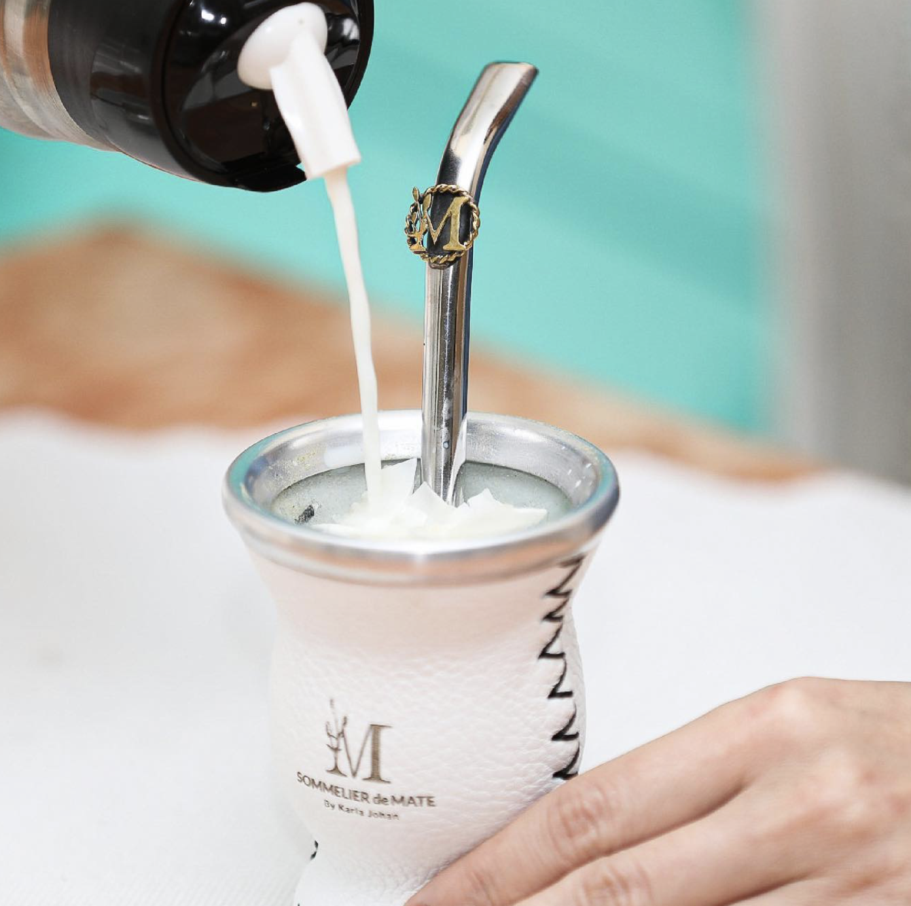
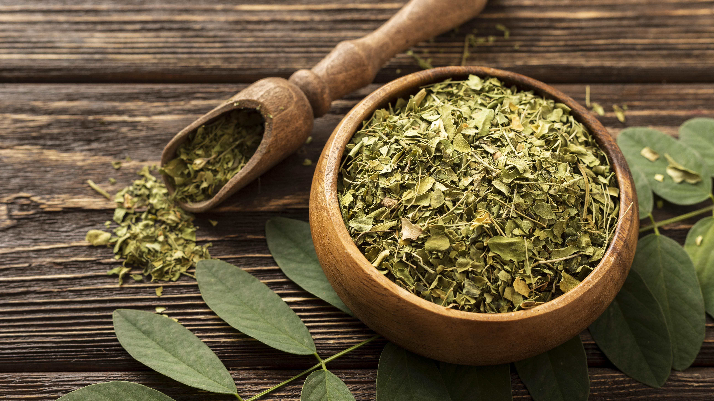
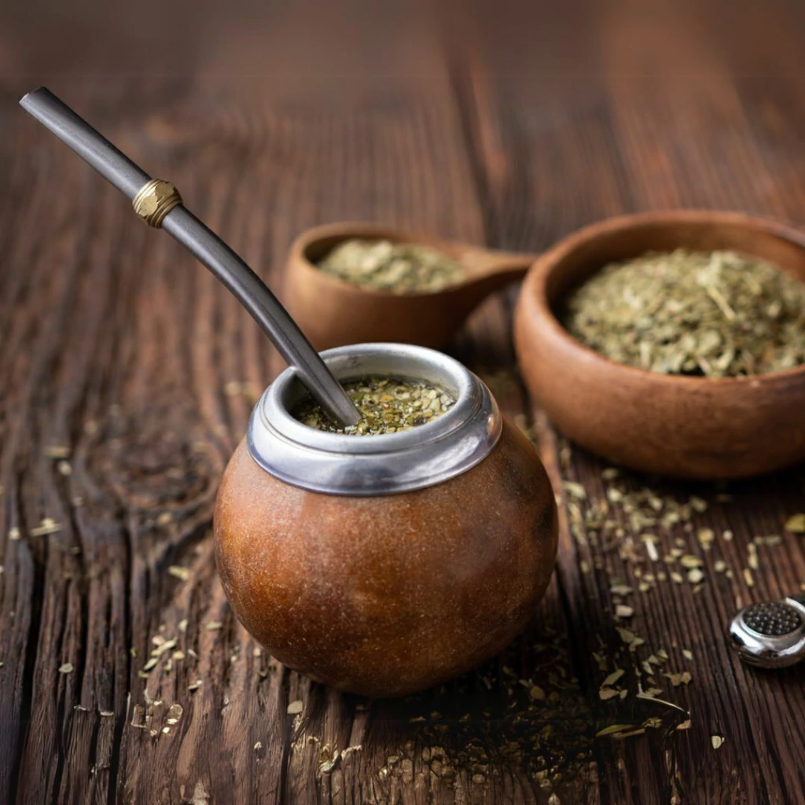

Aprende con Soul Mate
Descubrí todos los secretos para preparar el mate perfecto

Cómo curar un mate de calabaza
Aprende el proceso tradicional para curar tu mate y obtener el mejor sabor.

La preparación perfecta
Guía paso a paso para cebar el mate como un experto.

Mantenimiento y limpieza
Cómo cuidar tu mate para que dure toda la vida.

Tipos de yerba mate
Conoce las diferentes variedades y sus características.

Tipos de yerba mate
Conoce las diferentes variedades y sus características.

Tipos de yerba mate
Conoce las diferentes variedades y sus características.
Tutoriales en Video
Cómo curar un mate de calabaza
Aprende el proceso tradicional para curar tu mate y obtener el mejor sabor
Cómo preparar el mate perfecto
Guía paso a paso para cebar el mate como un experto